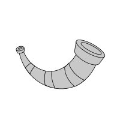

heimdallr.utilities.server.du_utilities.to_overall_du_process_df
¶
heimdallr.utilities.server.du_utilities.
to_overall_du_process_df
(
gpu_stats
:
Mapping
)
→
DataFrame
[source]
¶
description

heimdallr
Navigation
heimdallr
heimdallr.dist_is_editable
heimdallr.get_version
heimdallr.configuration
heimdallr.entry_points
heimdallr.server
heimdallr.utilities
heimdallr.utilities.date_tools
heimdallr.utilities.nvidia
heimdallr.utilities.publisher
heimdallr.utilities.server
heimdallr.utilities.server.du_utilities
heimdallr.utilities.server.du_utilities.to_overall_du_process_df
heimdallr.utilities.server.exclude
heimdallr.utilities.server.github_org_generators
heimdallr.utilities.server.google_calendar
heimdallr.utilities.server.gpu_utilities
Notes
Getting Started
Related Topics
Documentation overview
heimdallr
heimdallr.utilities
heimdallr.utilities.server
heimdallr.utilities.server.du_utilities
Previous:
heimdallr.utilities.server.du_utilities
Next:
heimdallr.utilities.server.exclude
Quick search